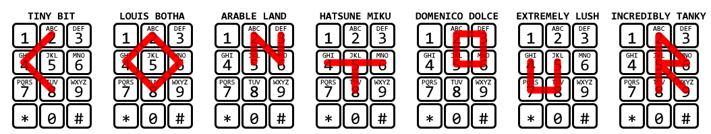

Solution: Puzzle Boxes
Answer: TRANSFIGURATIONS
Written by chimpaznee
The puzzle consists of a long list of "pieces" (answers) and eight presents, which make up a mini-meta collection. To solve the 8 "puzzle boxes", we must use the clues on each present, inspect the answers and sort them into their appropriate metas. Once the answers are sorted, it should be possible to solve the metas, all while 8 "frozen" answers are left over. The meta answers, together with the frozen answers, will make up one final metameta whose solution is the final answer to the puzzle.
Each meta is themed after a common puzzle encoding, and the number of lines on each present ribbon indicates the number of answers that feed into that meta. Here are their solutions, in the order in which the presents are presented:
Present 1
Answers used by this meta:
DAMS
DARK
DART
DOOR
EARL
NEAR
OMAN
ONES
ZANY
This meta is based on braille, clued by the mention of "trouble seeing" and the 2-by-3 blocks. Based on the fact that there are four 2-by-3 blocks in the image, and the fact that the answer lists contains a large number of four-letter-long answers, we should try to encode these answers as Braille. The middle row is highlighted in the image, which means we should take particular note of it. When we decode the braille dots in the middle row as binary (braille dot = 1), and order the answers alphabetically, we can spell out the answer BLOWN SAVE.
(Finding the correct set of answers becomes easier if one notices that the first letter needs to have "01" in its middle braille row. This limits the answers to those that start with D, E, N, O, Y or Z, which eliminates GAUL, JUJU and STEP as possibilities.)
| Answer | Braille encoding | Middle row as binary | Letter |
|---|---|---|---|
| DAMS | ⠙⠁⠍⠎ | 01000010 | B |
| DARK | ⠙⠁⠗⠅ | 01001100 | L |
| DART | ⠙⠁⠗⠞ | 01001111 | O |
| DOOR | ⠙⠕⠕⠗ | 01010111 | W |
| EARL | ⠑⠁⠗⠇ | 01001110 | N |
| NEAR | ⠝⠑⠁⠗ | 01010011 | S |
| OMAN | ⠕⠍⠁⠝ | 01000001 | A |
| ONES | ⠕⠝⠑⠎ | 01010110 | V |
| ZANY | ⠵⠁⠝⠽ | 01000101 | E |
Present 2
Answers used by this meta:
ARABLE LAND
DOMENICO DOLCE
EXTREMELY LUSH
HATSUNE MIKU
INCREDIBLY TANKY
LOUIS BOTHA
TINY BIT
This meta is based on multi-tap, a text entry system for mobile phones. Every answer that feeds into this meta consists of two words. If we take the second word of each answer, and trace the path made by its letters on a phone keypad, the paths take the form of letters. The first words of the answers have unique lengths, which means we can use this as our ordering. Sorted this way, the traced letters spell out the answer CONTOUR.

Present 3
Answers used by this meta:ACQUIRED IMMUNITY
AISLE
CHESS
DRESS
ELVIS
GEORGE GERSHWIN
HARSH
RELATIONSHIP
RESIN
SEMIFINALISTS
SPRINGBOARD
WEAK INTERACTION
This meta is based on Morse code, clued by "dotted" and "dashes". Half of the answers used here have the same length of 5. If we try to encode them as Morse, we can notice that they have a lot of dots. In fact, each answer only has two dashes. Furthermore, the combined number of dots and dashes is unique for each answer, and they can be sorted such that the numbers are consecutive.
The other half of the answers is clued on the right-hand side, with the clues being there solely to help find the right answers from the lengthy list. These answers also have unique and consecutive lengths, which can be matched with the number of dots and dashes of the other answers. Extract the letters that overlap with the positions of the dashes for the answer PRESS FORWARD.
| Five-letter answer | Morse encoding | Matching answer | Length | Extracted letters |
|---|---|---|---|---|
| RESIN | .-. . ... .. -. | SPRINGBOARD | 11 | PR |
| AISLE | .- .. ... .-.. . | RELATIONSHIP | 12 | ES |
| DRESS | -.. .-. . ... ... | SEMIFINALISTS | 13 | SF |
| ELVIS | . .-.. ...- .. ... | GEORGE GERSHWIN | 14 | OR |
| CHESS | -.-. .... . ... ... | WEAK INTERACTION | 15 | WA |
| HARSH | .... .- .-. ... .... | ACQUIRED IMMUNITY | 16 | RD |
Present 4
Answers used by this meta:
DEVANAGARI
FRIGGA
GAUL
ISAAC
LG CUP
MORTGAGE
This meta is based on amino acid code. Each answer contains a codon (triplet of A/C/G/U) which can be translated into an amino acid. Order the answers by the position in which the codon appears, and extract the one-letter symbols of the amino acids to get the answer DANGER.
| Answer | Amino acid | One-letter symbol |
|---|---|---|
| GAUL | Aspartic acid | D |
| LG CUP | Alanine | A |
| ISAAC | Asparagine | N |
| FRIGGA | Glycine | G |
| MORTGAGE | Glutamic acid | E |
| DEVANAGARI | Arginine | R |
Present 5
Answers used by this meta:
ACETALDEHYDE
BATTLE OF TRAFALGAR
CONTEMPORARIES
DOGMATIC THEOLOGY
ELONGATE
FOREMOST
GLIADIN
HISTORIC VILLAGE
INCHEON
JEROME ROBBINS
This meta is based on the NATO phonetic alphabet. Each answer contains an anagram of a letter in the NATO phonetic alphabet. The answers start with unique letters A-J, which we can use as the order. The NATO phonetic alphabet letters spell out the answer DASHT RIVER.
| Answer | Letter |
|---|---|
| ACETALDEHYDE* | Delta |
| BATTLE OF TRAFALGAR | Alfa |
| CONTEMPORARIES | Sierra |
| DOGMATIC THEOLOGY | Hotel |
| ELONGATE | Tango |
| FOREMOST | Romeo |
| GLIADIN | India |
| HISTORIC VILLAGE | Victor |
| INCHEON | Echo |
| JEROME ROBBINS | Romeo |
* The anagram in "ACETALDEHYDE" can use either the first or second E.
Present 6
Answers used by this meta:
BRAINWASH
COTSWOLD LINE
CYNWYD LINE
INWARD-FACING
JOHN WAYNE
SLOT MACHINE
SWIMMER
SWORD COAST
This meta is based on flag semaphore. Each of the answers used here has a pair of compass directions (where each direction may be cardinal or ordinal), which can be translated into a semaphore letter. We can notice that the distance between the two compass directions ("faraway places") is unique and ranges from 2-9, which means we can use it to sort the letters to read out the answer CUMULATE.
| Answer | Distance | Semaphore letter |
|---|---|---|
| BRAINWASH | 2 | C |
| JOHN WAYNE | 3 | U |
| SWIMMER | 4 | M |
| CYNWYD LINE | 5 | U |
| COTSWOLD LINE | 6 | L |
| SWORD COAST | 7 | A |
| INWARD-FACING | 8 | T |
| SLOT MACHINE | 9 | E |
Present 7
Answers used by this meta:
ATE
CHAD JOHNSON
FEBRUARY
HERBIE
TRUNCATED ICOSAHEDRON
ULTIMATE QUESTION
This meta is based on chemical element symbols. This is clued by the present's flavour text, and also slightly by the boxes on the right-hand side having the size of 1 or 2. We should look for answers that relate to specific numbers when paired up with the clues. In clue order, these are:
| Clue | Matching answer | Number | Explanation |
|---|---|---|---|
| a. Vertices | TRUNCATED ICOSAHEDRON | 60 | A truncated icosahedron has 60 vertices. |
| b. Answer | ULTIMATE QUESTION | 42 | In The Hitchhiker's Guide to the Galaxy, the answer to the Ultimate Question of Life, the Universe, and Everything is 42. |
| c. Lids and doors | HERBIE | 53 | The number 53 appears on the doors and lids of Herbie, the Love Bug. |
| d. Jersey | CHAD JOHNSON | 85 | Chad Johnson's jersey number is 85. He was known as Chad Ochocinco ("eight five" in Spanish) during the 2009-2011 seasons. |
| e. Days, commonly | FEBRUARY | 28 | February has 28 days in common years. |
| f. Sound-alike | ATE | 8 | "Ate" and "eight" are homophones. |
The numbers should be treated as atomic numbers. The elements' symbols can now be put into the respective boxes, and their letters rearranged as shown in the image to spell out the answer DOMINATION.
Present 8
Answers used by this meta:ARENA
COY
JUJU
LAP
STEP
TERRA
This meta is based on the Caesar cipher. Each answer used by this meta can become a new word when shifted. The shifted words can be used to find unique answers to the clues that match the given blanks. But we're still not done - the letters from the red lines extract to the nonsensical "MZOEOYTAUSBN". We must now use the fact the Puzzle Santa went "there and back again", and Caesar shift once again. We should shift the letters of each clue answer by the same amount that we originally shifted the answers, but in reverse (so that we're "back where we started"). The newly-shifted letters spell out the answer VISIBLE LIGHT.
| Answer | Shift | Shifted answer | Clue | Clue answer | Shifted clue answer | Letters |
|---|---|---|---|---|---|---|
| ARENA | +17 | RIVER | Largest _ | AMAZON | JVJIXW | VI |
| STEP | +22 | OPAL | The largest _ was found here | COOBER PEDY | GSSFIV TIHC | SI |
| TERRA | +13 | GREEN | It makes plants _ | CHLOROPHYLL | PUYBEBCULYY | BL |
| LAP | +15 | APE | Brown _ | ORANGUTAN | ZCLYRFELY | EL |
| COY | +12 | OAK | _ genus | QUERCUS | EISFQIG | IG |
| JUJU | +20 | DODO | _ closest living relative | NICOBAR PIGEON | TOIUHGX VOMKUT | HT |
The Metameta
To solve the metameta (and the puzzle) we will need to use both the frozen answers and the meta answers. There is no shell this time: all information can be found in the answers.
Each of the remaining frozen answers contains a double letter. The double letters are A-H, which means we should use these to sort the answers:
REGIA AERONAUTICA
EBB AND FLOW
IONIC COMPOUND
NELSON RIDDLE
DUNG BEETLE
EARMUFFS
EASTER EGG
ROUGHHOUSE
Now, the first letters of the frozen answers read "REINDEER". This is a clue that will become relevant once we look at our meta answers: BLOWN SAVE, CONTOUR, CUMULATE, DASHT RIVER, DANGER, DOMINATION, PRESS FORWARD and VISIBLE LIGHT. Given this puzzle's Christmas theming, the said reindeer are none other than Santa's original eight! We can now note two things:
- Each meta answer shares its first 2-3 letters with one of the reindeer.
- Santa's reindeer have a canonical order, in which they first appear in the 1823 poem A Visit from St. Nicholas. We can now sort the meta answers in the reindeer's order.
With both the frozen answers and the meta answers sorted, we should now extract. When we collect a bigram from each meta answer, in the same position as the double letter in the respective frozen answer, we can read out the final answer to the puzzle: TRANSFIGURATIONS.
| Reindeer | Meta answer | Frozen answer | Overlapping bigram |
|---|---|---|---|
| Dasher | DASHT RIVER | REGIA AERONAUTICA | TR |
| Dancer | DANGER | EBB AND FLOW | AN |
| Prancer | PRESS FORWARD | IONIC COMPOUND | SF |
| Vixen | VISIBLE LIGHT | NELSON RIDDLE | IG |
| Comet | CONTOUR | DUNG BEETLE | UR |
| Cupid | CUMULATE | EARMUFFS | AT |
| Donner | DOMINATION | EASTER EGG | IO |
| Blitzen | BLOWN SAVE | ROUGHHOUSE | NS |
Author’s Notes
I really like "meta-sorting" type puzzles, and wish they appeared more often in puzzle hunts. I began working on a puzzle for this answer shortly after it got unclaimed by a different author, and noticed that we don't have a puzzle of this type yet. While brainstorming ideas for this answer, I noticed that we do not have a meta-sorting puzzle, so I knew immediately what I wanted to write. The metameta and the theme of Christmas and presents came about quickly, then I was stuck trying to write 8 winter-themed metas.
It was really hard to think of 8 separate metas that are all connected to winter. But while thinking of ideas, the semaphore compass meta came to my mind, and I immediately decided to change direction, and theme all of the metas around common puzzle encodings, which I feel is a much more cohesive and easier-to-write-for theme. Also, at this point we had two puzzles with a very strong winter theme (Ice Fishing and On Thin Ice), so I thought that the Christmas and present theme was just enough.
In a hunt with a relatively small number of metas, I hope that this puzzle scratched some solvers' meta itch. It was a really fun puzzle to construct, but also required a decent of effort. Surprisingly, the testsolves went super smoothly. With the first two solo tests being unspoiled and hintless, the puzzle required very few revisions. Hope that you liked Puzzle Santa's presents!
To finish, here is a bonus present! This one was left over from when I was trying to make winter-themed metas. Though perhaps it is easier without the meta-matching aspect, you can try it out if you want.
AVE
CAT
CREAKER
DREAM
HICKEY
PECK
PULLETS
RANK
SLEET
TUBE
Things encountered or done:
During facilitation?
During a hailstorm?
In areas larger than 50,000 km²?
In areas smaller than 50,000 km²?
With a puck?
100,000 years ago?
While figure skating?
While listening to rap?
Using a sharp tool?
While eating?